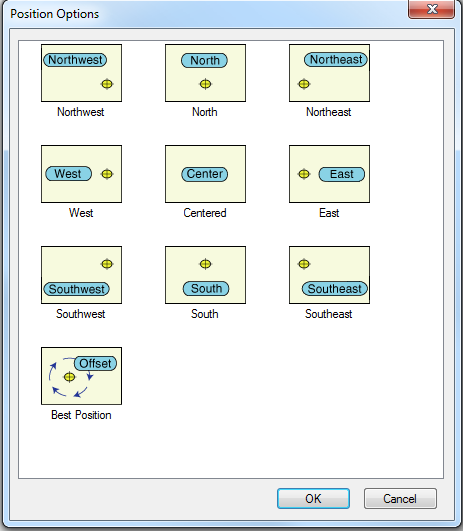
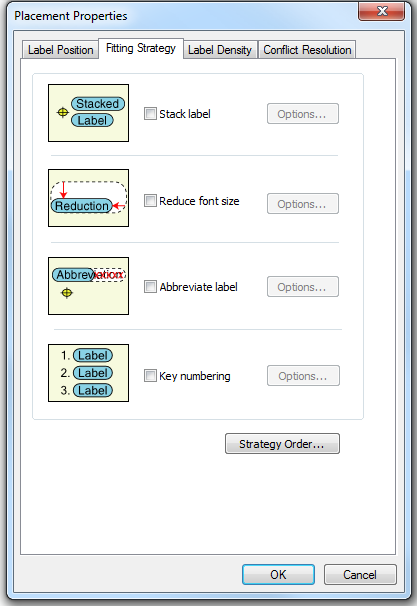

Well-placed labels can make a map more understandable and useful. ArcMap provides a special set of tools that allows you to improve the quality of the labels on your map.
Finding the Labels Tab
The Labels Tab in the properties menu (when you right click a layer and select properties).
Placement Properties Button
This button is highlighted (in yellow) in the image above.
- When displaying new signs (labels) it is essential to determine which signs are more important to show.
- To choose how the labels are displayed, the user should click the placement properties button.
Once in the Placement Properties Menu you'll notice that there are four tabs at the top for the user to choose from: Label Position, Fitting Strategy, Label Density, and Conflict Resolution.
Label Position Tab
The first tab in the Placement Properties dialog box, Label Position, helps the user decided where should the label go. This tab controls how a label is positioned in relation to a given feature.
Within this option, ArcMap gives you a number of different placement options to choose from under the position button. Ideally the user will have some idea where they would like their labels to be placed, but if not ArcMap gives you the option to choose the placement for you (as seen in the Position Options Menu Below).

Fitting Strategy Tab
The second tab Fitting Strategy, helps the user decide, how can I make the label best fit on the map? This tab allows you to control ArcMap’s Label Engine by changing a label's placement or format when placing labels in crowded areas of the map. The label placement options control features such as: label stacking, feature overrun, font size reduction, label abbreviation, and key numbering.

Label Density Tab
In the third tab, Label Density, you can decrease the number of labels being placed per class by spacing out the labels that are placed. This is done by setting a buffer size to control the space around labels or by removing duplicate labels. You can also control label density by labeling features based on their size or their connection to other features.
Conflict Resolution Tab
The fourth tab, Conflict Resolution, helps you answer the question, what wins a space when multiple labels are competing for it? This tab contains parameters that order the importance of label classes and their features. You can also give labels different feature weights, which let you indicate which feature classes may be covered by labels. Background labels may be overlapped by other labels.